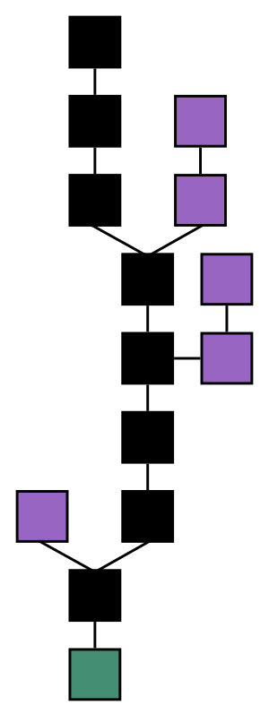

블록체인 (영어: block chain, blockchain)은 관리 대상 데이터를 '블록'이라고 하는 소규모 데이터들이 P2P방식을 기반으로 생성된 체인 형태의 연결고리 기반 분산 데이터 저장환경에 저장되어 누구도 임의로 수정될 수 없고 누구나 변경의 결과를 열람할 수 있는 분산컴퓨팅 기술 기반의 데이터 위변조 방지 기술이다.

이는 근본적으로 분산 데이터 저장기술의 한 형태로, 지속적으로 변경되는 데이터를 모든 참여 노드에 기록한 변경 리스트로서 분산 노드의 운영자에 의한 임의 조작이 불가능하도록 고안되었다. 잘 알려진 블록체인의 응용사례는 암호화폐의 거래과정을 기록하는 탈중앙화된 전자장부로서 비트코인이 있다. 이 거래 기록은 의무적으로 암호화되고 블록체인 소프트웨어를 실행하는 컴퓨터상에서 운영된다. 비트코인을 비롯한 대부분의 암호화폐들이 블록체인 기술 형태에 기반하고 있다.